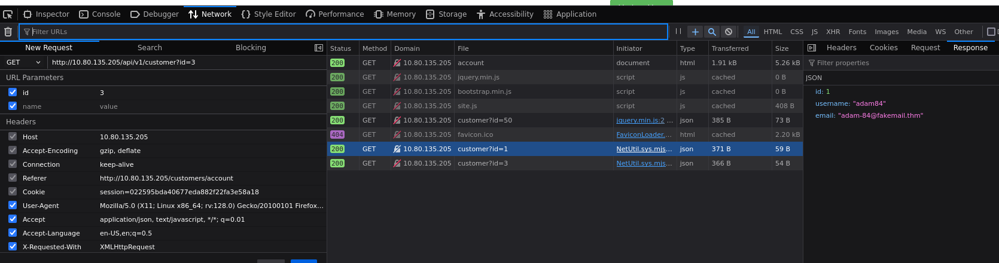

¿Qué es un IDOR ?
IDOR significa Referencia directa de objeto inseguro y es un tipo de vulnerabilidad de control de acceso.
Este tipo de vulnerabilidad puede ocurrir cuando un servidor web recibe información proporcionada por el usuario para recuperar objetos (archivos, datos, documentos), se ha depositado demasiada confianza en los datos de entrada y no se validan en el lado del servidor para confirmar que el objeto solicitado pertenece al usuario que lo solicita.
Imagina que te acabas de registrar en un servicio en línea y quieres cambiar la información de tu perfil. El enlace al que haces clic te lleva a http ://online-service.thm/profile ? user_id =1305, donde podrás ver tu información.
La curiosidad te vence e intentas cambiar el valor de user_id a 1000 ( http ://online-service.thm/profile ? user_id =1000). Para tu sorpresa, ahora puedes ver la información de otro usuario. ¡Has descubierto una vulnerabilidad de IDOR ! Idealmente, debería haber una comprobación en el sitio web para confirmar que la información del usuario pertenece al usuario registrado que la solicitó.
IDOR Codificados
Base64
Se presenta cuando el sitio web codifica la informacion en el front para que el back la pueda verificar, sin embargo la vulnerabilidad se identidica cuando se decodifica el string en base64, se modifica el valor y se vuelve a codificar, como en el siguiente ejemplo
HASH(MD5 - SHA256 - SHA1)
De igual manera se puede codificar el string a travez de un hash, la metodologia para detectar esta vulnerabilidad es la misma, donde se decodifica el string con herramientas como crackstation.net
IDOR con ID IMPREDECIBLES
Se refiere a una prueba técnica, no a ingeniería social: consiste en crear dos cuentas, iniciar sesión con una y cambiar manualmente el ID en la URL o en la petición (por ejemplo en una API) por el ID de la otra cuenta; si aun estando logueado como el usuario A puedes ver o acceder a los datos del usuario B solo por haber cambiado ese ID, entonces la aplicación no está validando permisos correctamente y existe una vulnerabilidad IDOR (Insecure Direct Object Reference).
DONDE SE ENCUENTRAN UBICADOS
Ese texto dice que los endpoints vulnerables (como los de IDOR) no siempre están a la vista en la barra de direcciones. Muchas veces están “escondidos” en peticiones AJAX que hace la página en segundo plano o dentro de archivos JavaScript que el frontend usa. Además, puede pasar que un endpoint funcione sin parámetros visibles (por ejemplo /user/details usa tu sesión para saber quién eres), pero que existan parámetros ocultos o olvidados del desarrollo, como user_id, que no se usan normalmente. Si tú agregas ese parámetro manualmente (/user/details?user_id=123) y el servidor te devuelve datos de otro usuario sin verificar permisos, entonces hay una vulnerabilidad IDOR descubierta mediante minería de parámetros.
Minería de parámetros (probar parámetros que no están documentados pero el backend sigue aceptando).
